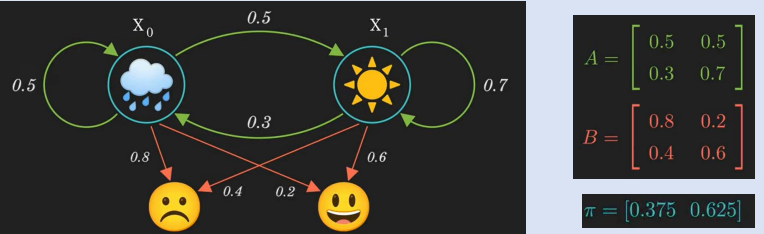

Consider the same situation as before but instead of three weather conditions we only have two.

If Sad is Y0 and Happy is Y1.
What is the probability that Darshan have following mood sequence : (Sad, Sad, Happy)
There can be 8 possible sequences of weather that could exist.
To reduce the time complexity of previous expressions we use the Forward Algorithm.
Some calculations are repeatedly done in previous probability expressions.
So, we will try to store the results of these repeated expressions.
Here’s a video that explains how to solve this problem using the algorithm.
https://www.youtube.com/watch?v=9-sPm4CfcD0
- The underlying theoretical basis is much more sound, elegant and easy to understand.
- It is easier to implement and analyze.
- HMM taggers are very simple to train (just need to compile counts from the training corpus).
- Performs relatively well (over 90% performance on named entities).
- Statisticians are comfortable with the theoretical base of HMM.
- Liberty to manipulate the training and verification processes.
- Mathematical / theoretical analysis of the results and processes.
- Incorporates prior knowledge into the architecture with good design.
- Initialize the model close to something believed to be correct.
- It eliminates label bias problem
- It has also been proved effective for a number of other tasks, such as speech recognition, handwriting recognition and sign language recognition.
- Because each HMM uses only positive data, they scale well; since new words can be added without affecting learnt HMMs.
- The underlying theoretical basis is much more sound, elegant and easy to understand.
- It is easier to implement and analyze.
- HMM taggers are very simple to train (just need to compile counts from the training corpus).
- Performs relatively well (over 90% performance on named entities).
- Statisticians are comfortable with the theoretical base of HMM.
- Liberty to manipulate the training and verification processes.
- Mathematical / theoretical analysis of the results and processes.
- Incorporates prior knowledge into the architecture with good design.
- Initialize the model close to something believed to be correct.
- It eliminates label bias problem
- It has also been proved effective for a number of other tasks, such as speech recognition, handwriting recognition and sign language recognition.
- Because each HMM uses only positive data, they scale well; since new words can be added without affecting learnt HMMs.